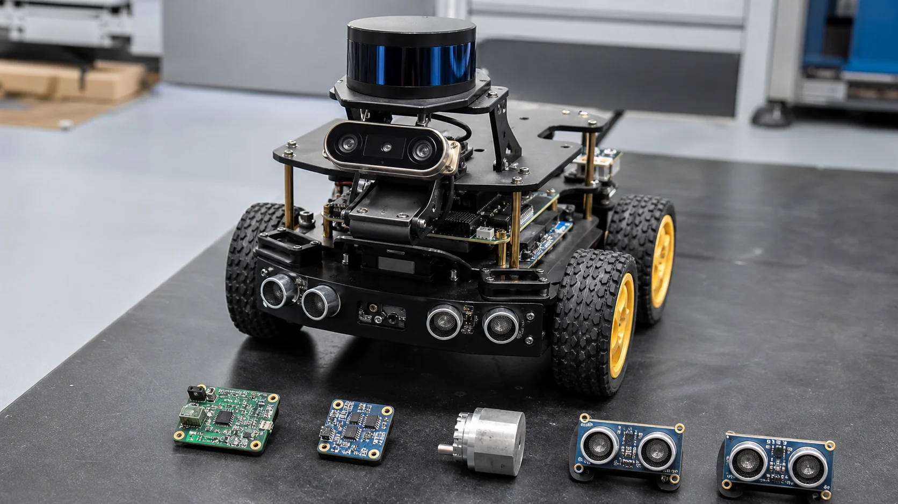
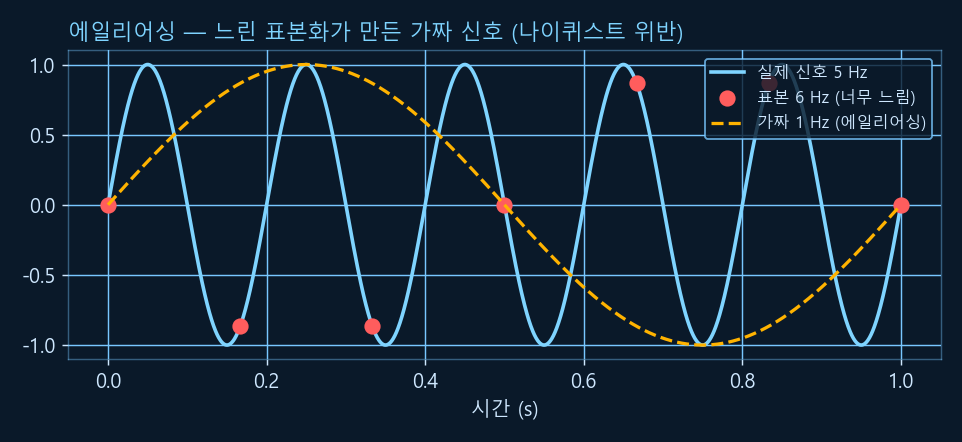
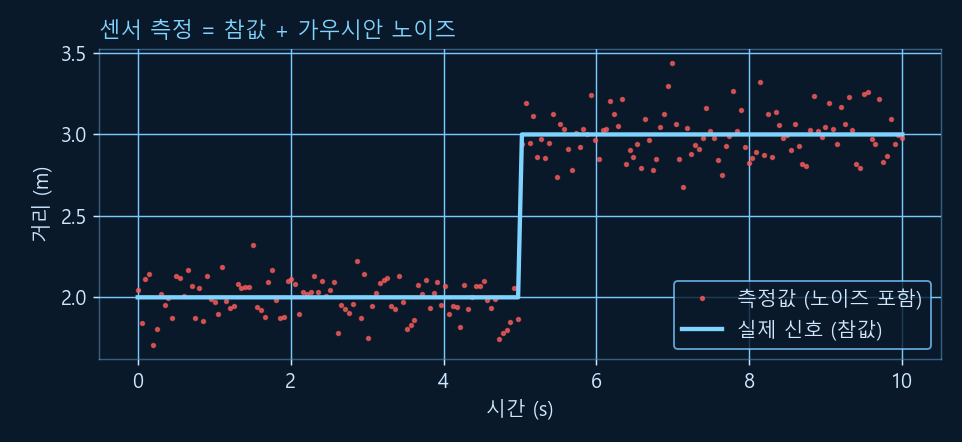
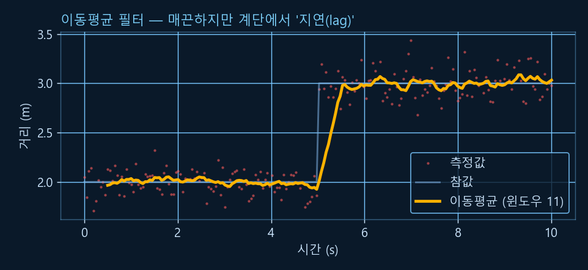
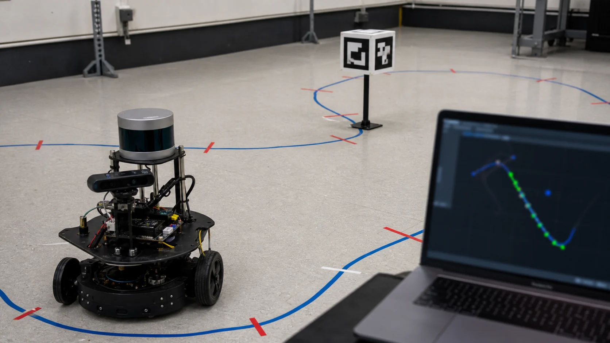
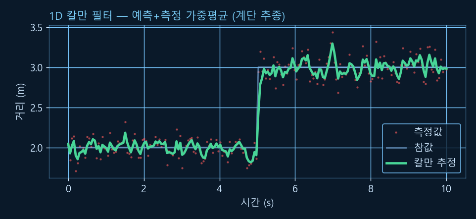

Chapter R2: 센서와 신호
로봇의 "감각기관"을 다룹니다. IMU·엔코더·LiDAR·초음파·카메라가 각각 무엇을 어떻게 측정하는지, 그 측정값을 컴퓨터로 들여오는 샘플링과 피할 수 없는 노이즈를 이해하고, 이동평균과 1D 칼만 필터로 노이즈를 걸러 깨끗한 값을 얻는 법까지. (R0의 정규분포·평균이 여기서 쓰입니다. 모든 코드·그래프는 Python으로 실행 검증했습니다.)
1. 센서란? — 로봇의 감각기관
센서는 물리 세계(빛·소리·움직임·자기장)를 숫자(전기 신호)로 바꿔 로봇에게 들려주는 장치입니다. 분류 기준 두 가지를 알아 두면 정리가 쉽습니다.
💡 비유로 이해하기: 내 몸의 감각 vs 바깥을 보는 감각
눈을 감고도 "내 팔이 굽었는지(고유수용성)"는 알 수 있죠 — 근육·관절의 감각입니다. 반면 "앞에 벽이 있는지(외부수용성)"는 눈·귀로 바깥을 봐야 압니다. 로봇도 같습니다: 엔코더·IMU는 자기 몸 상태를, LiDAR·카메라·초음파는 환경을 감지합니다.

| 분류 | 뜻 | 예 |
|---|---|---|
| 고유수용성 (proprioceptive) | 로봇 자신의 상태(자세·속도·관절각) | IMU, 엔코더 |
| 외부수용성 (exteroceptive) | 로봇 바깥 환경(거리·영상·장애물) | LiDAR, 카메라, 초음파 |
| 능동 (active) | 스스로 신호(빛·소리)를 쏘고 반사를 측정 | LiDAR, 초음파 |
| 수동 (passive) | 외부 에너지를 받기만 함 | 카메라, 지자기계 |
2. IMU — 관성 측정 장치
IMU(Inertial Measurement Unit)는 보통 세 가지 센서를 한 칩에 모은 것입니다. 로봇·드론·스마트폰의 "자세 감각"을 담당합니다.
가속도계 (Accelerometer)
선형 가속도를 측정(m/s²). 정지 시엔 중력을 느껴 기울기(roll·pitch)를 알 수 있음. 단, 진동에 민감.
자이로스코프 (Gyroscope)
각속도(회전 속도, rad/s)를 측정. 빠른 회전을 잘 잡지만, 적분하면 드리프트(bias drift)로 서서히 틀어짐.
지자기계 (Magnetometer)
지구 자기장으로 방위(yaw, 나침반)를 측정. 주변 금속·전류에 교란될 수 있음.
각 센서는 장단점이 뚜렷합니다 — 가속도계는 길게 보면 안정적이지만 진동에 흔들리고, 자이로는 순간 회전에 강하지만 시간이 갈수록 드리프트합니다. 그래서 실무에서는 센서 융합(sensor fusion)으로 서로의 약점을 메웁니다(상보 필터·칼만 필터). 융합의 기초가 이 챕터 뒤의 필터입니다.
⚠️ 핵심: 자이로 드리프트
자이로의 각속도를 적분(R0의 적분!)하면 각도가 나오지만, 미세한 바이어스 오차가 계속 쌓여 몇 초~몇 분이면 눈에 띄게 틀어집니다. 그래서 가속도계(중력 기준)·지자기계(방위 기준)로 주기적으로 보정합니다.
3. 엔코더 — 회전을 숫자로
엔코더(encoder)는 바퀴·모터·관절이 얼마나 돌았는지를 셉니다. 모바일 로봇이 "내가 얼마나 갔나"를 추정하는(오도메트리, R4) 출발점입니다.
- 증분형(incremental): 회전할 때 펄스를 셈(상대 변화). 전원이 꺼지면 절대 위치를 잃음.
- 절대형(absolute): 각 위치마다 고유 코드 → 전원을 켜자마자 절대 각도를 앎.
- 분해능 PPR/CPR: 회전당 펄스 수(PPR). 쿼드러처(A·B 두 신호가 90° 어긋남)를 쓰면 방향도 알고 분해능이 4배(CPR = PPR×4)가 됩니다.
import numpy as np
PPR = 1024 # 엔코더 분해능 (회전당 펄스)
CPR = PPR * 4 # 쿼드러처(A·B 2상) → 카운트는 4배
wheel_r = 0.05 # 바퀴 반지름 5cm
def distance(counts):
revolutions = counts / CPR # 카운트 → 회전수
return 2 * np.pi * wheel_r * revolutions # 회전수 × 바퀴 원둘레
# 4096 카운트 = 정확히 1회전 = 바퀴 원둘레만큼 전진
print("1회전(4096 카운트) 이동거리:", round(distance(4096), 4), "m")✅ 실행 결과 (검증됨)
1회전(4096 카운트) 이동거리: 0.3142 m
4. 거리 센서 — 초음파 · LiDAR · 적외선
거리 센서의 대표 원리는 비행시간(ToF, Time of Flight)입니다 — 신호(소리/빛)를 쏘고 돌아오는 시간을 재서 거리를 계산합니다. 신호가 갔다가 돌아오므로 왕복 시간을 2로 나눠야 편도 거리가 됩니다.
- 초음파(ultrasonic): 소리의 ToF. 싸고 간단하지만 좁은 범위·낮은 정밀도. 음속(≈343 m/s, 상온)은 온도에 따라 변함.
- LiDAR: 빛의 ToF를 360° 회전 스캔 → 주변 거리 지도(점군). SLAM·내비게이션의 핵심(R9).
- 적외선(IR): 근거리 거리·근접 감지에 사용. 밝은 햇빛·표면 색에 민감.
speed_of_sound = 343.0 # 상온(약 20°C) 공기 중 음속 (m/s)
def distance_from_tof(tof_seconds):
# 소리가 '갔다가 돌아온' 왕복 시간 → 2로 나눠 편도 거리
return speed_of_sound * tof_seconds / 2
# 왕복 0.01초(10ms) 걸렸다면?
print("거리:", distance_from_tof(0.01), "m") # 1.715 m✅ 실행 결과 (검증됨)
거리: 1.715 m
5. 샘플링 — 연속 세계를 띄엄띄엄 담기
센서는 연속적인 실제 값을 일정 간격으로 띄엄띄엄 읽습니다. 1초에 몇 번 읽나가 샘플링 주파수(Hz)입니다. 너무 느리게 읽으면 신호를 놓칩니다.
💡 비유로 이해하기: 선풍기 날개가 거꾸로 도는 영상
빠르게 도는 선풍기를 카메라(느린 샘플링)로 찍으면 날개가 멈추거나 거꾸로 도는 것처럼 보입니다 — 가짜 신호죠. 이게 에일리어싱(aliasing)입니다. 나이퀴스트-섀넌 정리는 대역 제한된 신호의 최고 주파수를 f_max라 할 때, 이론적으로 샘플링 주파수 f_s ≥ 2·f_max가 복원의 경계라고 말합니다.

실무 규칙: 관심 있는 가장 빠른 변화의 2배는 최소 경계로 보고, 실제 시스템에서는 안티에일리어싱 저역통과 필터와 충분한 여유(예: 5~10배)를 둡니다.
6. 노이즈 — 완벽한 센서는 없다
같은 것을 재도 측정값은 매번 조금씩 다릅니다. 입문 단계에서는 이 노이즈를 정규분포(가우시안)로 근사해 "측정값 = 참값 + 가우시안 노이즈"로 모델링합니다(R0 14절). 실제 센서는 바이어스, 드리프트, 이상치, 양자화 오차가 함께 나타날 수 있어 데이터로 가정을 확인해야 합니다.
import numpy as np
rng = np.random.default_rng(42) # 재현 가능한 난수(시드 고정)
t = np.linspace(0, 10, 200)
true = np.where(t < 5, 2.0, 3.0) # 참값: 5초에 벽이 2.0m → 3.0m로 바뀜(계단)
noise = rng.normal(0, 0.15, size=t.size) # 평균 0, 표준편차 0.15 가우시안 노이즈
measured = true + noise # 센서가 실제로 읽는 값
print("노이즈 표준편차:", round((measured - true).std(), 3)) # ≈ 0.132
print("측정 첫 3개:", np.round(measured[:3], 3)) # [2.046 1.844 2.113]✅ 실행 결과 (검증됨)
노이즈 표준편차: 0.132 측정 첫 3개: [2.046 1.844 2.113]

노이즈에는 가우시안 백색잡음 외에도 바이어스(일정한 치우침), 드리프트(서서히 변함), 이상치(가끔 튀는 값)가 있습니다. 다음 두 필터로 이를 다스립니다.
7. 이동평균 필터 — 가장 간단한 노이즈 제거
이동평균(moving average)은 "최근 N개 값의 평균"으로 부드럽게 만듭니다. 노이즈는 위아래로 무작위라 평균 내면 상쇄됩니다. 단, 창(window)이 클수록 매끈해지지만 반응이 느려집니다(지연).
import numpy as np
def moving_average(x, w):
kernel = np.ones(w) / w # 균등 가중치 (각각 1/w)
return np.convolve(x, kernel, mode="valid")
ma = moving_average(measured, 11) # 최근 11개의 평균
print("길이:", measured.size, "->", ma.size) # 200 -> 190 (가장자리 손실)
print("이동평균 첫 3개:", np.round(ma[:3], 3)) # [1.966 1.973 1.988]✅ 실행 결과 (검증됨)
길이: 200 -> 190 이동평균 첫 3개: [1.966 1.973 1.988]

8. 1D 칼만 필터 — 예측과 측정의 똑똑한 가중평균
칼만 필터는 로보틱스에서 가장 중요한 필터입니다. 핵심 아이디어는 "예측(내가 예상한 값)과 측정(센서가 준 값)을 신뢰도에 따라 가중평균"하는 것입니다. 둘 중 더 믿을 만한 쪽에 더 큰 가중치를 줍니다.
💡 비유로 이해하기: 두 친구의 길 안내 합치기
한 친구는 "여기쯤일 거야"(예측), 다른 친구는 "방금 표지판 봤어"(측정)라고 합니다. 둘 다 조금씩 틀릴 수 있죠. 칼만 필터는 각 친구가 얼마나 자신 있는지(불확실성)를 따져 더 믿을 만한 쪽으로 기운 평균을 냅니다. 그 가중치가 칼만 이득 K입니다.

1D(스칼라) 칼만은 매 측정마다 세 줄로 끝납니다 — ① 예측(불확실성 P가 Q만큼 커짐) → ② 이득 K = P / (P + R) → ③ 갱신(예측값을 측정 쪽으로 K만큼 당김). 여기서 R은 측정 노이즈, Q는 과정(변화) 노이즈입니다.
import numpy as np
def kalman_1d(z, R, Q, x0, P0=1.0):
x, P = x0, P0 # 상태 추정 x, 불확실성 P
out = []
for m in z:
P = P + Q # ① 예측: 시간이 흘러 불확실성 증가
K = P / (P + R) # ② 칼만 이득 (0~1): R이 크면 측정을 덜 믿음
x = x + K * (m - x) # ③ 갱신: 예측을 측정 쪽으로 K만큼 당김
P = (1 - K) * P # 측정을 반영해 불확실성 감소
out.append(x)
return np.array(out)
est = kalman_1d(measured, R=0.15**2, Q=0.01, x0=measured[0])
print("계단 전 추정(4~5s):", round(est[(t >= 4) & (t < 5)].mean(), 3)) # ≈ 1.95
print("계단 후 추정(9~10s):", round(est[t >= 9].mean(), 3)) # ≈ 3.03✅ 실행 결과 (검증됨)
계단 전 추정(4~5s): 1.952 계단 후 추정(9~10s): 3.034

9. 한 장 요약
| 주제 | 한 줄 정리 | 핵심 수치/공식 |
|---|---|---|
| 센서 분류 | 내 상태(고유수용성) vs 환경(외부수용성) | IMU·엔코더 / LiDAR·카메라·초음파 |
| IMU | 가속도계+자이로+지자기계 | 자이로는 드리프트 → 융합 필요 |
| 엔코더 | 회전을 카운트 → 거리 | CPR = PPR×4, 거리 = 2πr·회전수 |
| 거리 센서 | 비행시간(ToF) | 거리 = 속도 × 왕복시간 ÷ 2 |
| 샘플링 | 띄엄띄엄 읽기, 에일리어싱 주의 | 나이퀴스트: 최고주파수 × 2 이상 |
| 노이즈 | 가우시안 근사 + 실제 오차 요인 확인 | 평균·표준편차, 바이어스·드리프트·이상치 |
| 이동평균 | 최근 N개 평균, 매끈하나 지연 | 창 ↑ → 평활 ↑·반응 ↓ |
| 1D 칼만 | 예측+측정 가중평균 | K = P/(P+R) |
이제 로봇은 깨끗한 센서값을 얻었습니다. 앞서 배운 R1의 좌표 변환과 합치면 "어디서 무엇을 보고 있는지"를 알 수 있고, R4(키네매틱스)·R9(SLAM)로 이어집니다. 💪